Old News
December 1, 2016: Phoenix Emulator for the Amstrad CPC
I recently bought an Amstrad CPC on the flea market. The machine was called Schneider CPC in Austria and Germany, and it is a nice Z80-based home computer from the early eighties. So, I really had to try to program it in its machine language and wrote an emulator of the classic arcade game Phoenix from 1980. The original arcade machine was made by the American company Amstar (sounds a little bit like Amstrad, doesn't it) and had a 8085 CPU. So, the Amstrad CPC can directly run the original game program on its 8085-compatible Z80 CPU. To emulate the arcade machine's video and sound hardware on the Amstrad home computer I wrote specific Z80 routines. These are still a little bit buggy now. I made two versions. One with sixteen colors but lower resolution, and a second one with the original resolution but with only four colors.Here are two videos of the emulator in action:
Go to my CPC Phoenix Emulator page to read more about the emulator and to download it.
Or download the Amstrad CPC disk file right from here: phoenix.dsk
You can use this file with a CPC emulator or put it on a floppy disk or on tape and play it on the real machine.
The disk image contains two files. Run the file "phoenix" for the 16-color version with lower resolution, or
alternatively run the file "phoenixh" for the 4-color version with high resolution.
April 23, 2016: Thanks for the "Sprint" Feedback
Thanks to all for the interest and for the nice feedback on Atari's "Sprint" game from 1976. You can read more on it in my posts below. In the following, I summarize the relevant links:- Sprint in the browser: Browser game made by static binary recompilation to JavaScript (also in 3D)
- Sprint talk : Slides of the talks I gave at the meetings Technologieplauscherl, vienna.js, and RETROpulsiv
- sprint1.prg: Sprint ported to the Commodore 64
- sprint1.atr: Sprint ported to the Atari 800XL
- Atari's Sprint patent
For those who got interested, there is one more chance to hear the Sprint talk (in German) live at the upcoming Vintage Computer Festival Europe in Munich on May 1, 2016 at 11:15 AM.
Here are example slides and screenshots of the JavaScript, C64, and Atari 800XL versions:
| 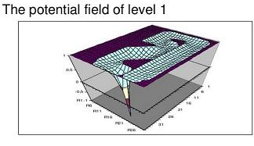 | 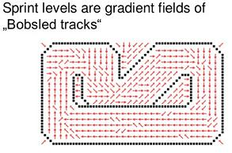 |
| 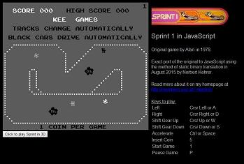 | 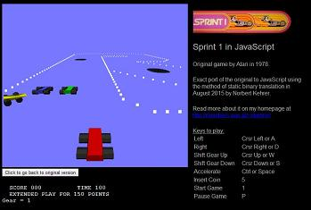 |
 |
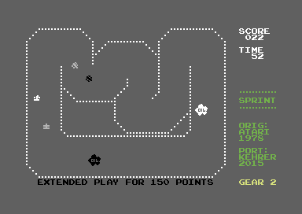 |
April 18, 2016: BTX-Server to connect your old Videotex terminal to the PC
In Austria and Germany there was in the 1980s a Videotex system called "BTX" or "Bildschirmtext" (German for "screen text"). I wrote a little server in JavaScript, which lets you connect your old Videotex decoders to a PC. With that, you can call up old Videotex pages stored as files on your PC and view them on the decoder.Here is the server in action showing an old German BTX page on my Mupid, a cool Austrian Videotex decoder from the eighties:
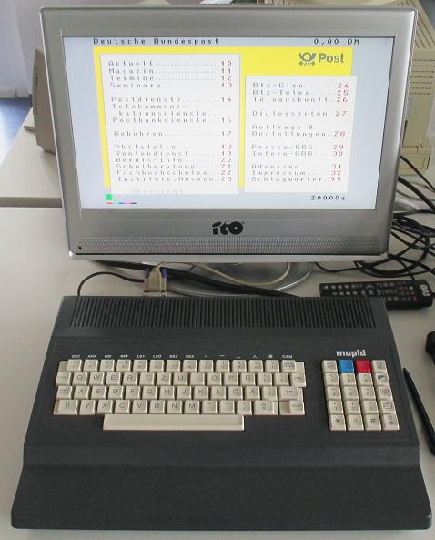
And here is the BTX server software as a zip file for download: btx_server.zip
Installation and usage instructions are included in the zip file. The software is still at a very early stage and still buggy, but you can call up a BTX page via *page# like back the old days. So, there is more to come ...
If you are a lucky Mupid owner, try out my Forth interpreter for that decoder (actually a FIG Forth port).
Start the BTX server, change to the forth directory with "cd forth", press the blue "K"
and then "A" on the Mupid, and then call up the BTX page with "*mupidforth#". After some loading you have the
old interactive programming language Forth available for your own Mupid experiments.
March 30, 2016: "Sprint" Talks at the Meetings Technologieplauscherl, vienna.js, Retropulsiv, and VCFE
It was a lot of fun for me to present the exciting insights into compiler construction and robotics I gained from Atari's classic 1976 arcade game "Sprint" in the really cool monthly meetups "Technologieplauscherl" in Linz and "vienna.js" in Vienna, as well as at the great RETROpulsiv in Augsburg.You can download my slides here:
Sprint - Exciting Insights from Translating a Classic Car Racing Game to JavaScript
Here are the links to the meeting pages:
For those who got interested, there is one more chance to hear that talk (in German) live at the upcoming cool Vintage Computer Festival Europe in Munich from April 30 to May 1, 2016, and I am looking forward to meeting you there:
Here is an example slide:
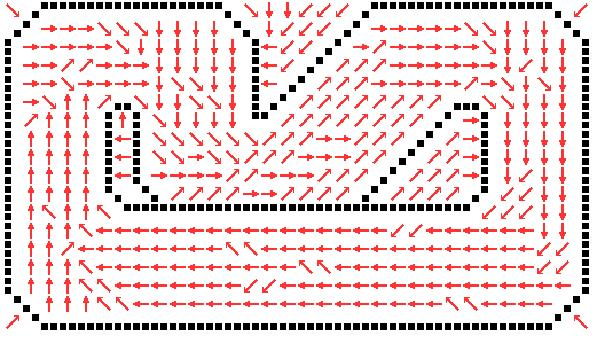
February 5-6, 2016: The 'LineTo' Bug. A little Game Jam Entry
For the first time, I attended a Game Jam. It was held at the at the University of Applied Sciences in Salzburg, and you had 36 hours to write a game on the topic "It's a feature, not a bug". This was really great fun and perfectly organized by Florian Jindra and team. Thank you!I wrote a little (boring) browser game based on a programmer's bug in drawing a square, where the postioning of the square was done using a 'LineTo' command instead of a 'MoveTo'. This results in a constantly drawn line from the coordinate system's origin to the square you control with the cursor keys. The target is to collect all the green squares while avoiding red bullets flying around.
You can try the game directly in your browser clicking here: The 'LineTo' Bug
Below you see a screenshot of the running game:
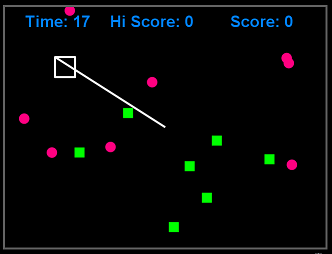
October 3, 2015: Sprint 1 Ported to the Commodore 64
After the conversion for the Atari 800XL, I now made also a port of the old, but very nice car-racing game Sprint to the Commodore 64. The original game was written by Atari back in 1976 (Sprint 2 for two players) and in 1978 (Sprint1 for one player).I ported the game to the Commodore 64 computer by just running the orignal arcade game program on the home computer. The arcade machine's video and sound hardware are emulated by specific C64 routines. In the home computer version the game has to be played with the joystick instead of the original's steering, gearshift, and accelerator pedal.
The game can be downloaded as an PRG file here: sprint1.prg
Below you see some screenshots of the running game:
| 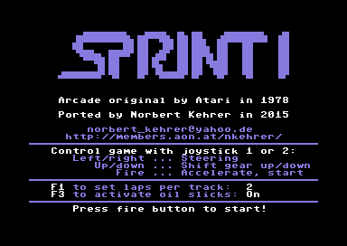 | 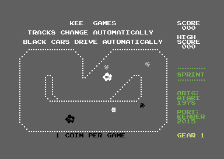 |
| 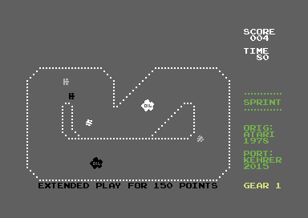 |
September 7, 2015: Sprint 1 Ported to the Atari 800XL
Similar to my conversion of Asteroids, I made a port of the old, but very nice car-racing game Sprint, which was originally written by Atari back in 1976 (Sprint 2 for two players) and in 1978 (Sprint1 for one player), respectively.I ported the game to the Atari 800XL computer by just running the orignal arcade game program on the Atari. The arcade machine's video and sound hardware are emulated by specific Atari 800 XL routines. In the homecomputer version the game has to be played with the joystick instead of the original's steering, gearshift, and accelerator pedal.
The program can be downloaded as an executable file here: sprint1.xex
It is also available as an atr file here: sprint1.atr
Below you see some screenshots of the running game:
| 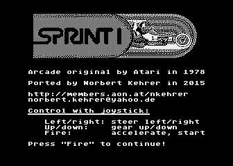 | 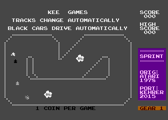 |
|
|
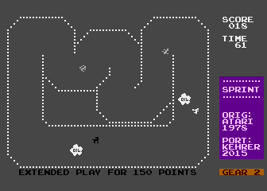 |
August 2, 2015: Sprint in JavaScript by Static Binary Translation (now also in 3D ;-)
I made another static binary translation of a 6502 CPU-based arcade game to JavaScript. It is the old, but very nice car-racing game Sprint, which was originally written by Atari back in 1976 (Sprint 2 for two players) and in 1978 (Sprint1 for one player), respectively.The JavaScript code was automatically translated from the original game's program code. A Prolog program generates semantically equivalent JavaScript code for each 6502 instruction and applies some optimization techniques to the generated program (e.g., removal of redundant flag calculations). The outcome is an exact simulation of the original arcade game. The graphics interface and the emulation of the Sprint video hardware were directly coded in JavaScript and rely on HTML5 and the Canvas element.
The video hardware of the old arcade machine was only capable of showing very simple 2D character-based playfield graphics with four moving objects (sprites). Today's car-driving games normally have 3D graphics, so I thought it would be nice to have a 3D interface also for Sprint. I wrote an alternative video hardware simulator for Sprint, where the same video RAM and sprite hardware registers, which the original Sprint video circuitry shows as simple 2D character graphics, are interpreted as coordinates and objects in three-dimensional space. The orignal game, in which you take a bird's eye view of the race track, becomes a 3D game seen from the first-person perspective of the driver's seat. But keep in mind, that it is still the completely same game logic and the same program from 1976 running, just graphically interpreted differently!
My 3D modelling and programming skills (and also my computer's graphics card speed) are quite limited, so my 3D version is very simple and still suffers from - what I think are - bugs in the (apart from that, really great) Three.js JavaScript 3D library. So, please consider this just a proof of concept.
Now, click here to try Sprint directly in your browser.. It is an arcade game, so don't forget to insert coins first by pressing the "5" key, and then start it with the "1" key.
Here are example screenshots for the original and the 3D version:


June 24, 2015: Static Binary Translation Talks at the "vienna.js" Meetup in Vienna
It was a lot of fun for me to present some backgrounds of my static binary translations of old 6502-based arcade games in the really cool monthly meetup of the Vienna JavaScript User Group called vienna.js. Thanks a lot to all the visitors and to Roland Schütz for organizing it so perfectly and for inviting me.You can download my slides here: Static Binary Translation of 6502 Arcade Games
You can try the translated games here:
I hope, at least some of you got interested in trying such a translation also. I found it very exciting
and surprisingly challenging. You can practice and learn something about code generation and optimization,
and at the same time you get a video game.
June 19, 2015: IBM 5110 Emulator Now With Floppy Disk Support
I added now support for floppy disk drives to the IBM 5110 emulator. Four disks are linked: IBM's "Customer Support Functions", "Diagnostic Diskette", and "Serial I/O Diskette", and an empty disk. Storing something to disk also works, but it is lost, when you leave the browser. I still have to find some good persistence model for JavaScript.I am still looking for dumps of 5110 disks or tapes to add them also. If you happen to have such files or old disks, please send me an email.
Click here to try the IBM 5110 directly in your browser.
May 25, 2015: IBM 5110 Emulator in JavaScript
The IBM 5100 and 5110 were IBM's first "portable" computers. They had interpreters of the machine languages of IBM's much bigger machines System/3 and System/360 in their ROMs, and so this small computer could execute (slightly adapted) BASIC and APL language implementations of the large machines. The IBM 5110 was the first "real" computer I worked on. We had one in our school, and many thanks go to my physics and to my chemistry teacher for letting us work on this (for me) mega-expensive machine in school back in the early eighties. There was no dedicated computer science course at our school, but the two teachers showed us how the 5110 can be used to solve physics and chemistry problems and introduced us to the fascinating world of computer programming.I now wrote a JavaScript emulator of the IBM 5110 to be used directly in the web browser. It is a port of Christian Corti's great emulator, which he wrote for Unix systems. There are probably still some bugs and issues with the keyboard mapping, and disk and tape support are still missing. I am working on it, though, and I am looking for dumps of 5110 disks or tapes to use as test cases. If you happen to have such files, please send me an email.
Now, click here to try some BASIC or APL on the IBM 5110 directly in your browser.
Here is an example screenshot:
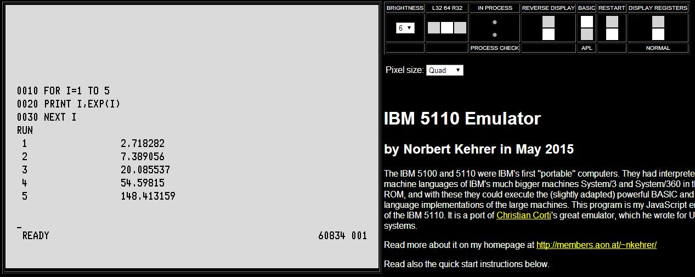
May 1 and 2, 2015: Talks at the VCFE about Translation of 6502 Arcade Games to JavaScript and HP Caluclator Emulation
It was a lot of fun for me to present some backgrounds of my static binary translations of old 6502-based arcade games and of my little emulators of old Hewlett-Packard pocket calculators in the really cool Vintage Computer Festival Europe in Munich. Thanks a lot to all the visitors and to Hans Franke for organizing it so perfectly every year.You can download the slides of my talks here (all in German):
April 2, 2015: Centipede in JavaScript by Static Binary Translation
I made another static binary translation of a 6502-based arcade game to JavaScript. It is the great game Centipede, which was originally written by Atari back in 1980.The translation was automatized by my Prolog program, which generates semantically equivalent JavaScript code for each 6502 instruction and applies some optimization techniques to the generated program (e.g., removal of redundant flag calculations). The outcome is an exact simulation of the original arcade game. The graphics interface and the emulation of the Centipede video hardware were directly coded in JavaScript and rely on HTML5 and the Canvas element. So you should have a quite recent browser version supporting these features to be able to play the game.
If you are interested in the technique I used for the automatic translation and the highly interesting challenges I faced in this process, come and visit the great Vintage Computer Festival Europe (VCFE) in Munich fom May 1 to May 3, 2015. I will give a talk there on the project, and would be happy to meet you, discuss it, and have fun.
Now, click here to try Centipede directly in your browser..
Here is an example screenshot:
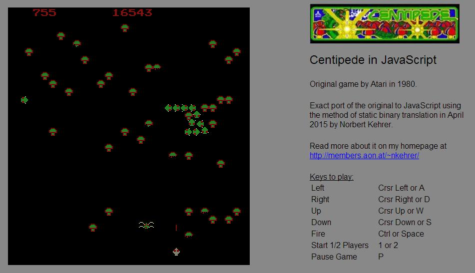
March 3, 2015: Astro Fighter in JavaScript by Static Binary Translation
I continued my experiments with static binary translation of 6502-based arcade games and translated the 1980 game Astro Fighter to JavaScript.The arcade game Astro Fighter was originally written by Data East Corporation (DECO) in 1980. It was one of the first arcade games I ever played, though the version we had in our pub was called Astro Wars (a remake based on a Signetics 2650 CPU by the Italian company Zaccaria).
The translation was automatized by a Prolog program, which generates semantically equivalent JavaScript code for each 6502 instruction and applies some optimization techniques to the generated program (e.g., removal of redundant flag calculations). The outcome is an exact simulation of the original arcade game. The graphics interface and the emulation of the Astro Fighter video hardware were directly coded in JavaScript and rely on HTML5 and the Canvas element. So you should have a quite recent browser version supporting these features to be able to play the game.
Click here to try this Astro Fighter version now..
Here is an example screenshot:
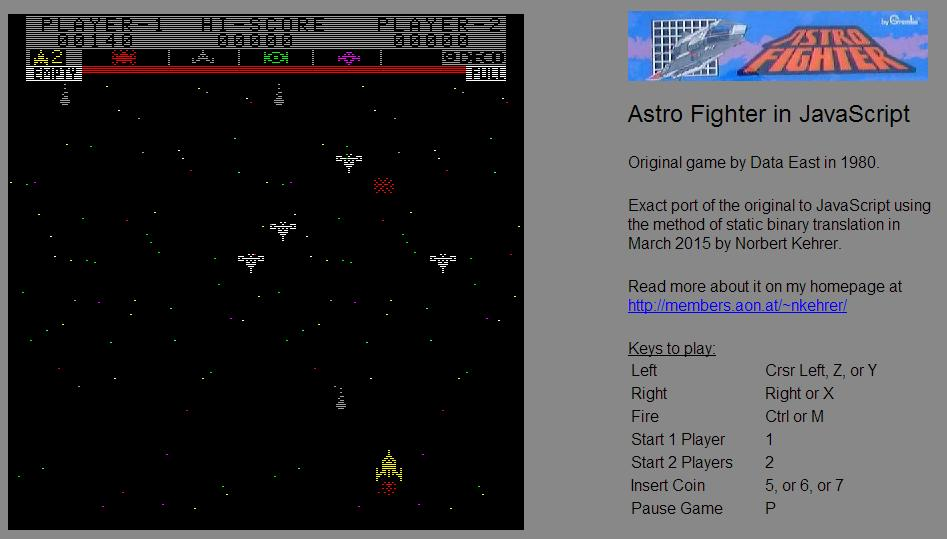
November 26, 2014: Static Binary Translation Talks at "Retropulsiv" in Augsburg and "Technologieplauscherl" in Linz
It was a lot of fun for me to present some backgrounds of my static binary translations of Asteroids (and 6502 machine language programs in general) in two really cool meetings. One was the great Retropulsiv in Augsburg in Germany, and the second one was the highly interesting Technologieplauscherl (technology chat) in Linz in Austria. Thanks a lot to Chrisitian Krenner and Thorsten Schöler for organizing the Retropulsiv and to Domink Hurnaus and his colleagues for organizing the Technologieplauscherl. They did a great job, and I really like these meetings, and I am already looking forward to the next ones.You can download my slides here and also the JavaScript "source code" I automatically generated out of the Asteroids ROM (containing also my Asteroids DVG video hardware simulator):
You are strongly encouraged to try creating such translators and translations yourself (!), but please do not use my code commercially and credit me in your non-commercial projects. I am also happy about feedback via email. Thank you.November 6, 2014: Hewlett-Packard Calculator Emulators for the Atari 800XL now with two "Colors"
The Atari 800XL versions of my HP calculator emulators only had a black-and-white screen up to now. Thanks to ClausB from the AtariAge board for pointing out the method to use player-missile graphics to produce another "color" (dark grey), and very special thanks to Adam Wachowski for explaining me so patiently how this really works on the Atari. For a guy like me, who "grew up" with a C64, the way the 8-bit Atari's video hardware works still seems a little bit strange.And this is how it looks like now:
 |
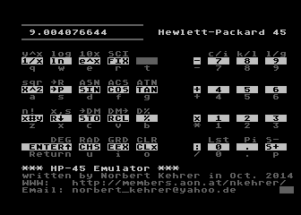 |
 |
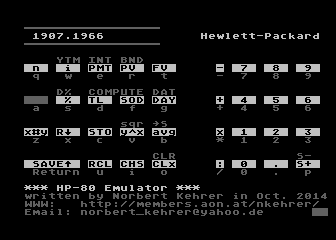 |
The two-color emulators for the Atari 800XL can be downloaded here:
October 25, 2014: Hewlett-Packard Calculator Emulators for the Atari 800XL and for the Commodore 64
In 1972 the great American company Hewlett-Packard shipped their first pocket calculator. It was called HP-35, and it was the first pocket calculator with transcendental functions and the first with the so-called Reverse Polish Notation (RPN). The HP-35 was a huge success with scientific/engineering users, so HP soon came out with a similar model for business users. It was called HP-80, and could solve problems like present and future values of payment streams, trend line calculations (least squares linear regression), ammortization, date calculation, etc. Hewlett-Packard continued with the HP-45, an improved scientific model (which I happen to own :-), and (after the models 65 and 70) with the HP-55, which was programmable and supported a quartz-controlled stopwatch function. These (so-called "classic") calculators of HP were based upon a proprietary 4-bit CPU developed just for that purpose.I now wrote emulators for these four calculators for the Atari 800XL and for the Commodore 64, which simulate the HP calculator CPU to interpret the original program ROMs of the four models. This enables you to work with your Atari 800 or C64 exactly like with the great classic HP calculators with their sophisticated scientific and business functions.
The emulators for the Atari 800XL can be downloaded here:
The emulators for the Commodore 64 can be downloaded here:
You can use these files with an Atari or Commodore emulator or put it on floppy disks and try it on the real machines.
In the following you find screenshots of the emulators running on the Atari 800XL and on the C64.
| Atari 800XL: | |
| 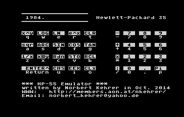 | 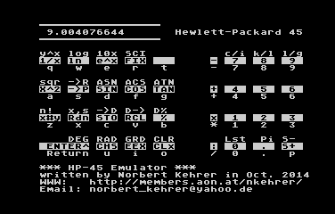 |
| 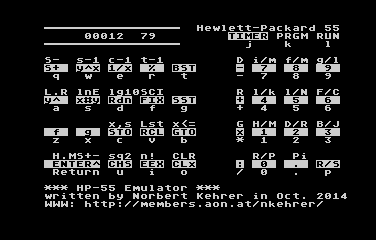 | 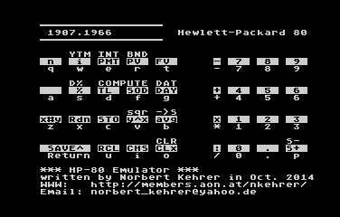 |
| Commodore 64: | |
 |
 |
 |
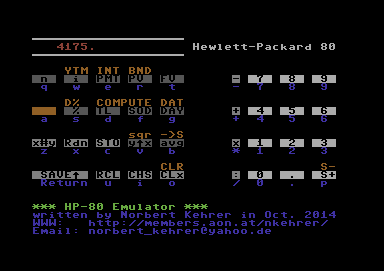 |
October 11, 2014: Hewlett-Packard 45 Calculator in JavaScript by Static Binary Translation
The Hewlett-Packard 45 is a great calculator. It was introduced in 1973 and was HP's second scientific calculator.This JavaScript version was created more than 40 years later by the method of static binary translation. That means, that the calculator's program code originally written in the machine language of HP's special 4-bit CPU used in the HP-45 was converted one-to-one to JavaScript. The translation was automatized by a JavaScript program, which generates semantically equivalent JavaScript code for each CPU instruction. The outcome is an exact simulation of the original HP-45 calculator.
Click here to try this HP-45 emulation now..
September 15, 2014: Asteroids 8-bit Emulation Paper in "Shift - Restore - Escape" Conference Proceedings
I had the honor to give a talk at Stefan Höltgen's great series of retrocomputing lectures "Shift - Restore - Escape", which he organized at the renowned Humboldt University in Berlin in 2013. I spoke about my emulators of the "Asteroids" arcade game on the vintage home computers Commodore 64, Atari 800XL, Commodore 128, and Commodore Plus/4, and it was really great, great fun. Stefan asked the speakers to write papers about their talks, and he compiled a superb book in German language called "Shift - Restore - Escape, Retrocomputing und Computerarchäologie" out of that.Today, this book, which is in a way the "Conference Proceedings" of Stefan Höltgen's lecture series, was published by the "CSW | Verlag", which is very well known for its numerous retrocomputing and retrogaming titles.
The book contains a fantastic selection of contributions to the modern retrocomputing scene and community, and also my paper titled "Asteroids auf 8-Bit-Heimcomputern, Portierung des Spielautomatenklassikers". I think the book is a must-have for every German-speaking retrocomputing fan.
Check Stefan's website to see the table of contents and more information (all in German): Stefan's site with more about "SHIFT - RESTORE - ESCAPE" .
Go to the CSW | Verlag to order your copy of the book: Buy the "SHIFT - RESTORE - ESCAPE" book .
And here is the book's cover:
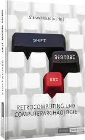
June 6, 2014: Asteroids in JavaScript by Static Binary Translation
I wanted to learn something about making games in JavaScript based on HTML5 and its Canvas element and tried to redo a Java project of mine from almost ten years ago in JavaScript now.I translated Atari's great vector arcade game Asteroids to JavaScript. Asteroids was originally written by Ed Logg of Atari Inc. in 1979, and my JavaScript version was created by applying the method of static binary translation to Ed's code. That means, that the program code originally written in the machine language of the 6502 CPU of the Asteroids machine was converted in a one-to-one manner to JavaScript. The translation was automatized by a Java program, which generates semantically equivalent JavaScript code for each 6502 instruction and applies some optimization techniques to the generated program (e.g., removal of redundant flag calculations). The outcome is an exact simulation of the original, first Asteroids game.
The graphics interface and the emulation of the Asteroids arcade machine's vector generator hardware were directly coded in JavaScript and rely on HTML5 and the Canvas element. So you should have a quite recent browser version supporting these features to be able to play the game.
Click here to try this Asteroids version now..
Here is an example screenshot:
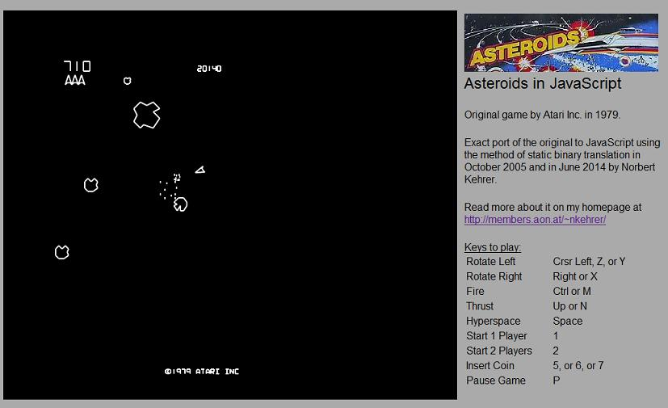
June 6, 2014: New Site http://members.aon.at/~nkehrer
I made a new website layout and also moved to a new URL. So, this is my new site "http://members.aon.at/~nkehrer". Please update your bookmarks. Thank you!May 4, 2014: MUPID talk at the VCFE
I gave a talk about the Austrian videotex decoder and home computer MUPID II from 1984 at the Vintage Computer Festival Europe (VCFE) in Munich and also presented the machine there. I ported fig-FORTH and CamelForth to the MUPID, and so I could also participate in the Forth Benchmark Contest held every year at the VCFE.The following picture shows my MUPID presented there:
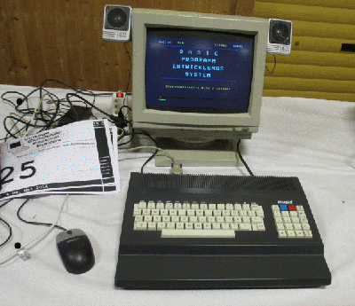
All this was really great fun. Many thanks to all who attended my talk,
to Carsten Strotmann for organizing the extremely enjoyable Forth Benchmark Contest,
and above all to Hans Franke for inviting me and for organizing this great
Retro Computing festival every year!
December 29, 2013: Galaga for the Atari 800
In 1982 the German programmer Henrik Wening made a great version of the arcade game Galaga for the Commodore PET computer. The PET, being more a business-oriented computer, had only very limited graphics and sound capabilities. So the game is graphically very simple but the gameplay is great. There was also a version of it for the Commodore 64, which I loved to play back in the eighties. You can read more on the original PET Galaga version on Henrik's homepage (in German).I now ported Henrik's great game to the Atari 800XL computer.
Here is a screenshot of the result:
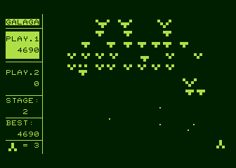
Go to my Galaga page to read more and to download it, or just
get the program file here: galaga.xex or galaga.atr
July 12, 2013: Atari Calculator for the Commodore 64
In 1979 Atari shipped a program called "Atari Calculator" for the Atari 800 computers. It provides the functionality of powerful, programmable scientific and financial calculators on the Atari home computer. I heard an interesting talk on it given by Roland B. Wassenberg on the Vintage Computer Festival 2013 in Munich, got interested, and now ported this program to the Commodore 64.Here is a screenshot of the result (note the Atari font ;-):
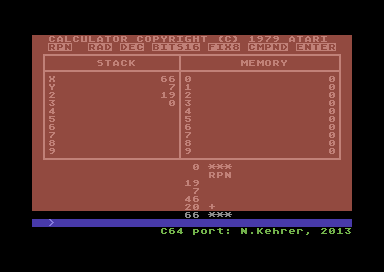
Go to my Atari Calculator page to read more and to download it, or just
get the program file here: calc.prg
March 18, 2013: Asteroids Emulator for the Commodore 64 - C128 Bug Fix
There was a bug in the Asteroids Emulator, which made it slower when run on the C128. This was fixed and hopefully it is fine now. Thanks to tokra, WTE, and Alan Reed for bug reporting and testing on the real machine.
Go to my Commodore 64 Asteroids Emulator page to download the new version, or just
get the new program file here: asteroid.prg
March 17, 2013: Asteroids Emulator for the Commodore 64 - Another Little Speed Increase
I made one more little speed optimization of the Asteroids emulator for the Commodore 64. It is noticeable especially when many objects are on the screen. This, I think, is now the last update of the C64 version for the moment.
Go to my Commodore 64 Asteroids Emulator page to download the new version, or just
grab the new program file here: asteroid.prg
March 16, 2013: Asteroids Emulator for the Commodore Plus/4
I ported my Asteroids Emulator for the C64 to the Commodore Plus/4. The conversion was quite an interesting task. The Plus/4 is similar but faster than the C64 due to the automatic switch to a higher clock frequency, whenever the raster beam is in the screen border or in VBLANK. Sound in the emulator is rather poor, though, due to the limited capabilities of the Plus/4's TED chip.
Go to my Commodore Plus/4 Asteroids Emulator page to download the new version, or just
get the new program file here: astplus4.prg
March 6, 2013: Asteroids Emulator for the Commodore 64 - Fast Mode on the C128
Here is another update of the Asteroids Emulator for the C64. The program now checks, if it is running on a C128 in C64 mode, and in that case it switches to the 2 MHz clock frequency, when the raster beam is in the border. This method allows a speedup of approximately 30% compared to the genuine C64 and results in smoother movements in the game.
Go to my Commodore 64 Asteroids Emulator page to download the new version, or just
get the new program file here: asteroid.prg
March 2, 2013: Asteroids Emulator for the Commodore 64 - Speed Increase
I received more positive feedback in the last days. Many thanks again to all of you. I made a further little speed optimization of the Asteroids emulator, and it should be faster now especially when more objects are on the screen.
Go to my Commodore 64 Asteroids Emulator page to download the new version, or just
get the new program file here: asteroid.prg
February 28, 2013: Asteroids Emulator for the Commodore 64 - Now also for the SuperCPU
I made now also a version of the Asteroids emulator for a C64 with the SuperCPU (20 MHz 6510-compatible processor) for the lucky ones who own such a device. I do not have one, so I could only test the program in the emulator. With this massive boost in computing power the game runs quite smoothly.
Go to my Commodore 64 Asteroids Emulator page to download the SuperCPU version, or just
get the program file here: astscpu.prg
February 26, 2013: Asteroids Emulator for the Commodore 64 - Improved Sound
Thanks to all the people interested in this program for their nice feedback in the last days. I now improved the sound of the Asteroids emulator (especially the saucers) and also could find a possibility for a small speedup (a little bit more to come hopefully).
Go to my Commodore 64 Asteroids Emulator page to download the new version, or just
get the new program file here: asteroid.prg
February 23, 2013: Asteroids Emulator for the Commodore 64
I did now the same exercise on the Commodore 64 as on the Atari 800XL a few months ago and wrote an emulator of Atari's classic 1979 arcade game "Asteroids" running on the C64. In the Asteroids emulator the "emulation" of the arcade machine's CPU is performed by the 6510 processor of the C64 itself, i.e. the original arcade program is directly executed on the home computer. The sophisticated video and sound hardware of the arcade machine is simulated by my Asteroids emulator program. The C64—due to its lower clock frequency—is slower than the Atari 800XL and has a more complex graphics representation. So, the challenge to make the emulator more or less fast enough on this small 8-bit home computer was really a big one for me.Here is now a video of the emulator in action:
Go to my Commodore 64 Asteroids Emulator page to read more about the emulator
and to download it.
November 3, 2012: Asteroids Emulator for the Atari 800XL
For the ABBUC Software Contest 2012 I wrote an emulator of Atari's classic arcade game "Asteroids" from 1979 which runs on the Atari 800XL. My program was placed third in the contest with very strong competitors, who all submitted really great new software for the old Atari 8-bit home computers. So I am very happy to be among the three best and would like to thank Sascha and the rest of the ABBUC team for organizing this great contest. Thanks also to Peter Dell for the discussions and for the cool WUDSN IDE, to Carsten Strotmann for his support and the discussions, and to all the ABBUC members for testing and voting for my program.In the Asteroids emulator the "emulation" of the arcade machine's CPU is done by the 6502 processor of the 8-bit Atari itself, i.e. the original arcade program is directly executed on the home computer. The sophisticated video and sound hardware of the arcade machine is simulated by my Asteroids emulator program. The biggest challenge in this project was to make the emulator fast enough on the small Atari computer, which is probably less (!) powerful than the emulated arcade machine.
Here is a video of the emulator:
Go to my Atari 800XL Asteroids Emulator page to read more about the emulator
and to download it.
November 1, 2011: PDP-8 Emulator for the Atari 800XL
For the ABBUC Software Contest 2011 I wrote an emulator of DEC's PDP-8 minicomputer from 1965 which runs on the Atari 800XL. The program surprisingly was placed fifth in the contest, which I am very happy about. Many thanks to Bunsen, Carsten, and the rest of the ABBUC team for their support and for organizing this unique contest. Thanks also to all the ABBUC members for testing and voting for my program.The Atari PDP-8 emulator can run PDP-8 binary programs on an Atari 800XL. It simulates the machine instructions and the teletype of an original machine with 16k words of main memory. The emulator has been successfully tested with PDP-8 software from the sixties and seventies like CHEKMO-II, the chess program, or the programming languages FOCAL and LISP.
You can watch a video of the emulator running the chess programm CHEKMO-II here (thanks to Thorsten for recording it):
Go to my Atari PDP-8 Emulator page to read more about it and to download it.
May 16, 2010: YM-64, my YM music player for the Commodore 64
YM-64 is a program to play so-called ym files on the Commodore 64. Ym files usually contain music written for the Atari ST, the Amstrad/Schneider CPC, or the Sinclair ZX spectrum. YM-64 emulates the YM2149 sound chip used in that computers and by that makes it possible to play their music also on Commodore 64 computers.
Go to my YM-64 page to download many YM files converted to C64
programs and to try them on an emulator or on the real hardware. Additionally, all the programs
are available in the popular sid file format.
September 6, 2009: My C64 Programs from the Eighties
My first own computer was a Commodore 64. I bought it in June 1984 together with a Datasette and a joystick and did quite a lot of programming on it from the beginning. Now I managed to transfer two of my old C64 programs to the PC with a self-built XE1541 cable. They are from 1988 and 1989 and are called "Snake" (a Nibbler clone) and "Tetris" (nomen est omen).
Go to my C64 page to download them and try them on the emulator or
on the real hardware.
May 1, 2009: Mailuefterl talk at the VCFE
I gave a talk about the history and technical aspects of the Mailuefterl computer at the Vintage Computer Festival Europe (VCFE) in Munich and also showed my emulator there.
This was really great fun. Many thanks to all the participants in my presentation
and above all to Hans Franke for inviting me and for organizing this great
Retro Computing festival every year!
November 27, 2008: Debugger for the Mailuefterl Emulator
I added a simple debugger (well it's actually just a tracer) to my Mailuefterl emulator. It allows to follow the execution of a program step by step. This is nice for Mailuefterl programmers of the 21st century, the guys in the 1950ies of course had to make it without such a tool.I also included a little "hello world" program.
Go to my Mailuefterl page to try it.
November 8, 2008: Prime Number Generator for the Mailuefterl
I wrote another little demo program for the Mailuefterl. It is a simple prime number generator.
Go to my Mailuefterl page to try it on my emulator.
November 1, 2008: Improvements in the Mailuefterl Emulator
Last week, I had a really interesting discussion with leading members of the Austrian Computer Society and got some very good feedback on possible improvements in the user interface of my Mailuefterl Emulator. Based on that, I changed the multi-window oriented structure of the user interface to a single-window view, to make the use of the program less confusing. The different I/O devices of the Mailuefterl will now be shown alternatingly in one window. I also removed the flickering of the blinkenlights display and added another little Mailuefterl program, which prints out the squares of integers.
Go to my Mailuefterl page to try out the improved version.
February 21, 2007: Mailuefterl Emulator with More Exact Control Desk
Dr. Moritsch from the Technical Museum in Vienna - now the home of the Mailuefterl computer - sent me some excellent pictures of the control desk of the Mailuefterl. With these photos I could make the layout of my control desk simulation much more like the original. In the next version, I plan to graphically visualize the switches and blinkenlights of the machine, to give a more authentic experience. Many thanks go to Dr. Moritsch for his precious help.I also continued the work on my Forth compiler for the Mailuefterl and added further kernel primitives. But all is still very much "work-in-progress".
Go to my Mailuefterl page to get an impression of the new features.
February 7, 2007: Mailuefterl Emulator now with Relay I/O
I extended my Java Mailuefterl emulator by a simulation of the the relay I/O capabilities of the original machine. I also included an original program from 1960, which uses these features.
Go to my Mailuefterl page to try out this great old software.
February 2, 2007: Mailuefterl Emulator
The Mailuefterl was the first fully transistorized computer in Europe. It was built at the Technical University of Vienna (Austria) from 1955 to 1958 by Dr. Heinz Zemanek and his team. I wrote an emulator for this pioneering machine as a Java applet.
Go to my Mailuefterl page to try out software which was
written in the 1950ies and probably has not been run for almost 50 years now!
August 6, 2006: MAME Driver for Dambusters
Today I submitted my third MAME driver. It is for the rare British arcade game made in 1981 by South West Research Ltd. in Bristol.Go to my Dambusters page to read more about the game and the story of my MAME driver.
May 4, 2006: Pacman Emulator for the Topfield TF4000PVR
I wrote another emulator for the Topfield TF4000PVR digital satellite receiver: The famous game Pacman from 1980.Go to my Topfield page for more information and for the download.
April 20, 2006: Space Invaders Emulator for the Topfield TF4000PVR
I continued my programming efforts for the Topfield TF4000PVR digital satellite receiver and created an emulator for Space Invaders, the great classic arcade game from 1978.Go to my Topfield page for more information and for the download.
April 16, 2006: Astro Fighter Emulator for the Topfield TF4000PVR
I recently bought a digital satellite receiver, the great Topfield TF4000PVR. It is not the latest model but it offers a lot of features at a very low price. The Topfield can execute user-written plug-in programs, so-called TAPs (Topfield Application Programs). Of course, I immediately had to try to create such a TAP, and I started with an Astro Fighter Emulator.Go to my Topfield page to read more about it and to download it.
September 5, 2005: Asteroids in Java by Static Binary Translation
After the first attempts with Tailgunner and Astro Fighter, I translated a real arcade classic to Java. It is Atari's great vector game Asteroids. Asteroids was originally written by Ed Logg of Atari Inc. in 1979, and it was the first arcade game I ever played (must have been back in 1980 :-).My Java version was created twenty six years later by translating the program code, originally written for the 6502 CPU of the Asteroids machine, to Java. This translation was made by a Java program I wrote, which generates corresponding Java program code for each 6502 instruction and applies some optimization techniques to the generated program (e.g., removal of redundant flag calculations).
This project is open source and you can download a zip file with the applet ready for installation on your PC or website and with the complete source code in Java.
Click here to play Asteroids now.
Download the game from here, but please do not forget to credit Atari for the original game and me for translating it to Java :-)
August 28, 2005: Astro Fighter in Java by Static Binary Translation
The arcade game Astro Fighter was originally written by Data East Corporation (DECO) in 1980. Twenty five years later, I made an internet browser version of it by translating the Astro Fighter program code, originally written for the 6502 CPU of the Astro Fighter machine, to Java. The translation was made by a program, which generates corresponding Java program code for each 6502 instruction and applies some optimization techniques to the generated program (e.g., removal of redundant flag calculations).This project is open source and you can download a zip file with the applet ready for installation on your PC or website and with the complete source code in Java.
Click here to play Astro Fighter now.
Download the game from here, but please do not forget to credit DECO for the original game and me for translating it to Java :-)
August 12, 2005: New Site Layout
I made a new layout of my site. It uses frames now for the menu bar on the left-hand side, which makes navigation and maintainance easier.In the last months I have been working on a static binary translator from 6502 machine language to Java and will present my first results soon. Stay tuned.
July 19, 2004: Tailgunner in Java by Static Binary Recompilation
Today is my birthday and I can present a new program here :-). It is an exact port of the 25 year old classic arcade game "Tailgunner". I did this little project together with Graham Toal.Tailgunner is a nice vector game made by Dan Sunday of the company Vectorbeam in 1979. Vectorbeam and the game were sold to Cinematronics later. Tailgunner was very advanced for its time. It is probably the first 3D vector game (older than Battlezone). This time the exact reproduction of the game is not achieved by a conventional CPU emulator, but by so-called static binary recompilation. Graham Toal wrote a really cool program, which can translate the original game code from C-CPU machine language to C. With Graham's help I ported his generated code to Java and added the graphical Java environment to play the game in an applet. Thank you Graham, it was a cool project :-)
The program is open source, and you can download a zip file with the applet ready for installation on your PC or website and with the complete Java source code.
Click here to play Tailgunner now.
Download the game from here.
March 7, 2004: MAME 0.80 with Mad Alien
Today version 0.80 of MAME, the world's best arcade emulator, was released. It contains my driver for Mad Alien.February 26, 2004: Java Emulators Offline
Today I removed my Java emulators from my website. I think after four years and more than 5 million visits most of the people, who are interested in this stuff, now know about JAE, ONE, and NOSE. Thanks to all of you for visiting and for your nice emails. The project is not dead. I will continue my work on them and will let you know about the news here.February 18, 2004: MAME Driver for Mad Alien
I finished the preliminary version of my second MAME driver. It is for the still unemulated game made in 1980 by Data East Corporation (DECO).Go to my Mad Alien page to read more about the game and the story of my driver for it.
December 25, 2003: MAME 0.78 with Super Tank
A cool Christmas present: Today version 0.78 of MAME was released, and it includes my Super Tank driver. Wow :-)Merry Christmas to all the other MAME developers and to all the visitors of this site!
December 24, 2003: Super Tank on MAME WIP
Today there was an update to the official MAME WIP site announcing my Super Tank driver. It reads: "Norbert Kehrer submitted a fully working driver for Super Tank". There are also 4 screenshots added. Nice to be on the official MAME WIP page :-) Thanks!December 14, 2003: MAME Driver for Super Tank
After so much Java emulation, I had to try something different and decided to make my first contribution to MAME. I wrote a driver for the still unemulated game The game was made in 1981 by the German company Video Games GmbH, and AFAIK it was licensed to Computran for the US market.Go to my Super Tank page to read more about the game and the story of my driver for it.
July 18, 2003: Star Trek and Tac/Scan
Now almost a year has passed since the last news on this page. As tomorrow is my birthday, I wrote two new game drivers for the Java Arcade Emulator, to celebrate it and to show that emu programming is still big fun for me. Here are: These are two great vector games made by Sega in 1982. They are part of a series of vector games based on Sega's G80 hardware platform. More emulators of this series will follow soon.Go to the JAE page to read more about these games and to play them online.
August 26, 2002: Red Baron
Here is the next vector game for the Java Arcade Emulator: Atari made this 3D flight simulation game in 1980 and used almost the same hardware as for the Battlezone machine.Go to the JAE page to read more about Red Baron and to play it online.
August 11, 2002: Battlezone
After a long time, I am back with a new game for the Java Arcade Emulator (the 40th game). Is is Atari's cool vector game In 1980 Atari's programmer Ed Rotberg created this excellent piece of software, which I think was the first realistic 3D simulation game.Go to the JAE page to read more about the game and to play it online.
January 26, 2002: NOSE, the SMS emulator, is online
After a lot of arcade game emulators, I had to try something (slightly) different. I wrote an emulator for the Sega Master System (SMS) in Java which lets you play SMS games in your browser. The new emulator is called NOSE, Norbert's Online Sega Master System Emulator :-) It is based on JAE and ONE and offers the following features:- emulation of the Z80 CPU of the SMS
- emulation of the Sega Video Display Processor (similar to Texas Instruments' TMS9918/9928)
- emulation of the SN76496 sound chip made by Texas Instruments and used in the SMS
Go to the
NOSE page to read more about it and to play "Sonic" online!
January 13, 2002
Another great arcade classic by Williams is playable in the Java Arcade Emulator. It is the bizarre from 1982. Joust was a game with a really simple but absolutely brilliant game idea. It was a big success in the arcades and appeared on almost all home systems.Go to the JAE page to read more about the game and to play it online.
January 3, 2002
A new game is available for the Java Arcade Emulator. It is the legendary made by Williams in 1980. A real classic---one of the first arcade games I played, and one of the most thrilling.Go to the JAE page to read more about the game and to enjoy Defender right in your browser!
January 1, 2002
A Happy New Year 2002 to all visitors and fans of classic arcade games.December 1, 2001
My little page has reached 500,000 visits. Wow!!Thanks to you all. Have a lot of fun here :-)
October 31, 2001
At last, I had a little time to work on a game, that I have been trying to emulate in JAE for a long time. Now I succeded to solve most of the problems I had with it. It is the excellent arcade version of made by Atari Games in 1988. Some nice additions to the classic game idea and a huge number of different levels make this Tetris version one of the most enjoyables.The emulator does not perfectly emulate all of the graphics, because the Tetris machine used a dynamic color pallette. To compensate for this, a real-time emulation of Atari's famous "Pokey" sound chip was added, so that you can listen to the cool russian-style tunes, that Tetris plays with its two Pokey chips.
Go to the JAE page to read more about the game and to play Tetris online!
August 4, 2001
And here is another game for the Java Arcade Emulator. Sega made a funny shooting game back in 1980, which is now emulated in JAE. It is Go to the JAE page to read more about the game and to play it online!July 23, 2001
Some time has passed now without any additions to the Java Arcade Emulator. So here is game #35 of JAE. It is Stern's arcade hit from 1980 Go to the JAE page to read more about the game and to play it online!June 30, 2001
This little page has reached 200,000 visits. Great!Thanks to all of you.
April 16, 2001
It was snowing here at Easter (!), so I found some time to make an update to JAE. Game #34 has been added to the Java Arcade Emulator - and it is a great one. Here is Atari's legendary vector game from 1980 Go to the JAE page to read more about the game and to play it online!April 1, 2001
Another great classic arcade game has been added to JAE, the Java Arcade Emulator. This time it is Taito's 1986 hit The genre of wall and brick games was newly defined with Arkanoid. Cool features, attractive graphics, and brilliant gameplay made up the great success of this game.The emulator supports sound by real emulation of the AY8910 sound chip, which was used in the Arkanoid machines. You can control the bat with the cursor keys or the mouse.
Go to the JAE page to read more about Arkanoid and to play it online!
March 28, 2001
The last update of JAE, the Java Arcade Emulator, was made about half a year ago. At last I found some time to write a new driver. JAE now supports another one of the real classic games. It is Irem's arcade version of Lode Runner is a popular and addictive game that was ported to almost every gaming platform. There is even a 3D version for the Nintendo 64 console.Go to the JAE page to read more about Lode Runner and to play it online!
January 16, 2001
After one year it was time for a new site design. Enjoy it.January 14, 2001
Version 1.2 of ONE, the Online NES Emulator, has been released. This version has support for Nintendo's MMC3 chip (Mapper #4). Although not yet perfect, some games, which use the MMC3, have been added. For example- Super Mario Bros. 2,
- Super Mario Bros. 3 (!), and
- Tecmo Super Bowl (greetings to Jasen Brooks and all American Football fans).
December 27, 2000
Version 1.1 of ONE has been released. It has the following new features:- A bugfix for pallette mirroring was made. Now the background colors are correct (blue sky in Super Mario Bros., a.s.o).
- A GUI has been added. Now you can select the ROM from a list without having to reload the emulator.
- More than 40 games can be played now.
December 23, 2000
ONE has a great new logo now! JoseQ, the famous webmaster of JoseQ's EmuViews, has designed it.Thanks a lot for the perfect work, JoseQ!
My homepage has reached more than 100,000 visits. Wow!!
When I started the page about a year ago with the first version of JAE, with AstDX, and with Vantris,
I never would have thought, that this would ever be possible.
So it is time to say a big "Thank You" to all my visitors, to the emulation news reporters, and to
the other emulator authors.
Enjoy the software provided here and have a Merry Christmas! Frohe Weihnachten! Feliz Navidad! Buon Natale!
December 17, 2000
-
A small bugfix for the
Online NES Emulator (ONE)
has been made. Now the sound stops, when you close the browser window. Thanks to bwb for the bug
report.
The next steps in ONE development will be a GUI and correct emulation of the background color.
December 16, 2000
-
ONE,
the Online NES Emulator is out
The Online NES Emulator (ONE) has been released today. It is a new NES emu written in Java (on the basis of JAE). ONE lets you play NES games online in your browser window. At the moment there is support for the memory mappers 0, 1, 2, and 3. The number of mappers and supported games will increase soon. ONE also has sound support. The sound is produced by real-time emulation of the NES Audio Processing Unit. As this had to be done in Java, the sound quality unfortunately is rather bad.
I made a little selection of games, which already are playable with ONE. You can try them at the ONE page.
November 18, 2000
- There is a new addition to the Java Arcade Emulator. It is another Nintendo classic: Mario Bros. This arcade game from 1983 was the starting point of the famous "Super Mario" series on the NES and on the gameboy. Go to the JAE section to play it online.
November 4, 2000
- I added a new game to JAE, the Java Arcade Emulator. There was already a rumor in JoseQ's famous Rumor Mill about this. It is Donkey Kong 3, Nintendo's third part of the Donkey Kong trilogy. Go to the JAE section to read more and to play it online.
-
I also made my second sound chip emulator in Java. It emulates the AY-8910 sound generator, a
chip used in many arcade games of the eighties. The AY-8910 was also used for
- Bagman and
- Super Bagman,
Try these two classics and enjoy their funny tunes by clicking on the above links, or via the JAE section.
October 28, 2000
-
I made the first really emulated sound for the Java Arcade Emulator. The Namco sound chip in
- Pacman,
- Ms. Pacman, and
- Pengo
Another problem is, that sound does not stop, after closing the browser window with the game. For the moment you have to close the browser completely. I am working on this.
Big thanks go to Peter Futerko for the support with the sound routines. I used his great ideas, although I had to apply a completely different technique at the end, because I did not want to use the non-standard Java features of javax.sound.
Now try these three classics with sound in the JAE section!
October 11, 2000
-
There are two new games for the Java Arcade Emulator:
- Phoenix, an absolute classic made in 1980 by Amstar
- Pleiads, a game based on Phoenix hardware, released a year later by Tehkan.
September 30, 2000
- I added a new game to JAE, the Java Arcade Emulator. Once again, JoseQ's evil spy birds have already announced, what will come: Traverse USA, Irem's cool motorbike riding game from 1983. Go to the JAE section to read more about it and to play it online.
September 16, 2000
- Another game for JAE is out: Pooyan (Konami/Stern 1982). Go to the JAE section to read more about it and to play it online.
September 3, 2000
- The spy birds of JoseQ's Rumor Mill were right again. The 25th game of JAE is out: Kung-Fu Master (Irem 1984), the great fighting game, that was the first of a whole genre, which is still popular today. Go to the JAE section to read more about Kung-Fu Master and to play it online.
August 26, 2000
- As JoseQ already reported in his cool Rumor Mill, two new games for JAE are out. They are two top sequels of famous games: Super Bagman (Valadon Automation 1984) and Donkey Kong Junior (Nintendo 1982). Go to the JAE section to read more about the games and to play them online.
August 15, 2000
- JAE supports 22 games now. I added the cool Bagman (Valadon Automation 1982) and Midway's famous vector game Omega Race. Go to the JAE section to read more about the games and to play them online.
- I also made some small graphics improvements in Asteroids and Asteroids Deluxe. Unfortunately, Asteroids Deluxe still resets after some time of playing. I don't know why, yet.
August 5, 2000
- Games number 19 and 20 for JAE are out. Try the classic Nibbler by Rock-Ola or my own game Vantris which runs on similar hardware and is emulated in Java. Go to the JAE section to read more about this and to play the games online.
- JAE has a logo now. It was designed by JoseQ. Thanks a lot for the great work.
July 30, 2000
- Game number 18 for JAE is ready. Try the legendary Space Invaders. This game also has sound. Go to the JAE section to read more and to play Invaders online.
- I added marquee pictures for the JAE games.
July 29, 2000
- Two more classics for JAE are out. The cool Amidar (Stern/Konami 1982) and the excellent Pengo (Sega 1982). Go to the JAE section to read more and to play them online.
- I did some bug fixes in Pacman and Ms. Pacman (color problems).
July 27, 2000
- Game number 16 for JAE is ready. It is Ms. Pacman, Midway's Pacman sequel. Go to the JAE section to read more and to play Ms. Pacman online.
July 24, 2000
- And another classic arcade game I used to play in the early eighties was released for JAE. The cool Scramble by Konami (1981). Go to the JAE section to read more and to play Scramble online.
July 19, 2000
- Yet another arcade classic was released for JAE, the Java Arcade Emulator. The well-known Galaxians. Go to the JAE section to read more and to play Galaxians online.
- I made a bug fix for the Java Centipede Emulator. It now also runs on Internet Explorer. Try it here. Go to the JAE section to read more.
July 11, 2000
- Another arcade classic from the early eighties was released for JAE, the Java Arcade Emulator. The famous Frogger. Go to the JAE section to read more and to play Frogger online.
July 10, 2000
- I made a little speedup for the Java Pacman driver. Try it here.
July 9, 2000
- Another arcade classic was released for JAE, the Java Arcade Emulator. The cool Donkey Kong with sound! Go to the JAE section to read more and to play Donkey Kong online.
July 3, 2000
- I released another game for JAE, the Java Arcade Emulator. This time it is Pacman ! Go to the JAE section to read more and to play Pacman online.
June 28, 2000
- Ast3DX has been released - a completely redesigned AstDX. Ast3DX is an Asteroids emulator, which emulates Atari's Asteroids arcade machine, only that you play the game from the perspective of the cockpit of your space ship. So Ast3DX is a first person 3D shooter with texture-mapped polygon objects using the absolutely original Atari game play from 1979. Go to the Ast3DX section to read more and to download Ast3DX.
June 2, 2000
- Version 2.0 of AstDX is available. It has better graphics, can also handle new graphics for the player's ship, and has 10 MIDI tracks as background music. Go to the AstDX section to read more and to download AstDX 2.0.
May 1, 2000
- Eric Seeds made a cool skin for 'NEW Asteroids' called Poseroids. Check the New Asteroids section.
April 2, 2000
- AstDX: The Asteroids emulator for DOS with new graphics and sound.
February 14, 2000
- A new game is available for JAE: Black Widow by Atari.
- WIP for Grav-A-Move, the Bust-A-Move for Gravitar hardware: The first steps are taken (balls can be fired and land on their final position), but there is still a hard way to go.
- I got some feedback from guys trying to make a new skin for new Asteroids - the results will be published here.
January 22, 2000
- A new game is available for JAE: Space Duel by Atari.
January 9, 2000
- Complete source code available: I added the source code distribution for JAE (Download it now, it will soon be taken away for ever!).
- Technical info on how to make an Asteroids emulator with new graphics.